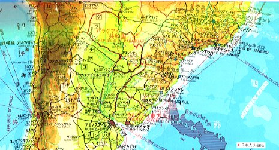

このリポートは 1エリアの入感状況です
全国版「50MHz DX Web Cluster」も参考にして下さい
50MHz DX Web Clusterへ
* 9M0C Spratly DX-Pedition 1998 速報！ |
【Back Issues Feb.98】
28.Feb.98
◎ 昨日のVKのオープニングは夜間までFBに入感していた模様で、西日本ではVK8のQSOがリポートされている。 今日は、昨日とはうって変わって、03:00z前後に“申し訳程度”の弱い46.240MHzのVK-TVが入感した程度。 05:00z前後に西日本で9M2TO(西マレーシア)とQSO出来ていたようだが、この入感は1エリアでは確認できなか った。 9M0Cで聞いた感じでは、04:00から08:00zにかけて毎日の様に49.750MHzが強力に入感していてコンデ ションが開いている感じだった。 特に9M6(東マレーシア)は9M0に近いので、間違いなくオープンしているも のと思われるが、今回の運用時に立ち寄った首都コタキナバルの現地のハムに聞いてみたが、6mに出られる局 は残念ながら1局もいなかった。 ◎ VK2GJH・JackによるTARAWA島からのT30JHの運用は、予定では2月21日で終了、24日にはオーストラリアに 帰国しているはずだが、時期が丁度9M0CのDX-Pediと重なってしまったが、9M0Cを運用中に呼んできたJackか らの情報では、6mはアンテナが壊れてしまい運用が不可能だったとの事。 9M0CをオペレートしていたG4JVGを経由しての伝言だったため詳細は不明だが、V73やFKが入感していたコンデ ションだっただけに惜しまれる。 ◎ K4AU、WA4FFWら米国のグループによるKH5/KH5Kの運用は終了したが、この後KH1(Baker Island)からの運 用が3月5日頃から12日まで予定されている。 KH5に比べればKH1の方がJAに対してオープンの可能性はありそ うだが、6mの運用がどの程度行れるのかは不明。 たとえ運用しても、どれだけJAにアンテナを向けてくれる かがオープンの“カギ”となる。27.Feb.98
VK4GPS 04:26 50.150 SSB VK4KK 04:32 50.110 SSB VK3AMK 04:46 50.110 CW VK4FZ/4 05:36 50.095 CW VK4CEU 05:44 50.101 CW FK1TK 05:46 50.130 SSB VK4VV 06:19 50.140 SSB ◎ 春のDXシーズンの“開幕”を思わせる様なコンデションが続いていますが、連日のVKの入感はともかく、 今日のFK1TKの入感は明らかにコンデションが上向いてきたことを示すものです。 近隣のカントリーの入感 に期待しましょう。 ◎ 今日(27日)、9M0C(Spratly Is)の運用から無事に帰国しました。 2月9日以来お休みしていましたこの コーナーも復活しました。 9M0C運用関係の様子は順次報告したいと思いますのでご期待下さい。 予想していた以上の6mのオープンに、運用した本人も驚いています。 多くの局からお呼び頂きましたが、 今回はまだ本格的なコンデションでなかったこともあり、受信状態が最良とは言えず局数を増やす事が出来 ませんでしたが、今後もSpratly Isからの運用は増えることと思いますので、今回QSO出来なかった皆さん は次回に期待して下さい。
9M0Cは5カ国の多国籍メンバーで運用された
6mを運用したS6サイトのFT-920
08.Feb.98
【お知らせ！】6mのコンデションにまだ上昇の気運が見られませんが、いよいよ2月12日から始まる9M0C(Spratly Is) のDX-Pediに参加のため、2月9日に東マレーシアの9M6(Kota Kinabalu)に出発します。 運用スケジュールは予定通りです。6mの状態は“難しい”とは思いますが、“CQ de 9M0C”を発射している50.110MHzに注意していて下さい。 オープン後は指定されている周波数にQSYして運用します。 帰国予定の2月下旬までこのコーナーでは運用状況を報告出来ませんが、 期間中の9M0Cに関する情報は専用のHomepage 9M0C SPRATLY 1998 をご覧下さい。 FB DX ! De JA1RJU |
* 50MHz DX Record (3) *JA5HTPが記録更新に挑戦するために選んだ運用場所の南大東島は、最近使われるているグリットロケーター(GL)で表示すると、 PL55(北緯25.49.51、東経131.13.59)でした。結果は、1981年4月2日にPP5WL、PP5AJFとのQSOに成功、相手の運用場所はRIO DE SUL(南緯27.12.55、西経49.38.30)、 GLはGG52でした。 この記録は僅かながらJA6FRとPY3BWのQSO記録を超えるものでした。 翌年の1982年3月12日、あらかじめスケジュールを組んで対蹠点近くに移動してくれていたPY5BAB/PY5、PY5WKC/PY5とのQSOに成功、 更に記録を伸ばしたのです。 相手の運用場所はCUBATAO(南緯25.52.00、西経48.44.20)、GLはGG54でした。 南大東島からのベストポイントは、南緯25.49.51、西経48.46.01(GLは同じGG54)となり、誤差を含めても5Km以内に迫る記録となりました。 この記録達成に際して、「約20.000Kmを超える記録」というだけで、正確な距離の表示はされませんでした。 JA6FRが記録した19.810Kmの記録から、更に対蹠点に近づいたことは確かだったのですが、残された距離は、 ほとんど「誤差」の範囲、との見方もあったからです。 これは地球の形状がピンポン玉のように円形ではなく、「西洋梨」のようにいびつになっていて、対蹠点と一口に言っても、 2点間の距離は地球上の場所によってそれぞれ異なる、という理由からでした。 地球の赤道上の外周は40,075.2Kmと言われています。 それに対して南極と北極を結ぶ外周(子午線)は40,008Kmと、70Km近く短かいのです。 (参考=国立天文台編・理科年表) さらに、外周は南極側がつぶれた状態なので、その形状から「西洋梨」状態と言われているのです。 このことは、対蹠点が赤道上にあるならば(相手も当然赤道上)、2点間の距離は40,075.2Kmの半分の約20.038Kmとなりますが、 子午線上同志なら、40.008Kmの半分の20.004Kmの距離にしかなりません。 すなわち、20.004Kmから20.038Kmの間のどの距離が、自分に該当する対蹠点との距離になるのかを計算する必要があります。 計算には、複雑な「計算式」(双方の正確な緯度、経度に定数を加えることによりある程度は可能といわれる)が必要になってくるのです。 JA5HTPの記録は数値による表示はされなかったものの、より対蹠点(地球の裏側)に近づいた事は事実であり、 前の記録とほとんど離れていない場所からの運用だったことなどから、距離的にも記録を更新したことは想像出来ます。 なによりも、僅かな距離とはいえ「残された記録」にトライした努力は、高く評価されるものです。 最近、インターネットの情報のページに「British Isles 50MHz Record QSO」として、 VK3AKK-DJ4ICDの17,100Kmの記録が取り上げられていました。 また、オーストラリアの資料によるQSO記録としては、VK2FLR-CU3/N6AMGの19,424Kmが記録されています。 いずれにしても、JA5HTPの記録は“究極”の対蹠点(地球の裏側)に限りなく近いQSOと言えるでしょう。 (この項・完)  |
* 50MHz DX Record (2) *1956年3月2日、JA6FR(佐賀県)が南米アルゼンチンのLU9MAとQSO、交信距離は19,000Kmを超えるものでした。その後もJA6FRは南米ブラジルとのQSOに成功、1958年にはPY3BWとのQSOで交信記録を19,810Kmに伸し、 このQSOの記録が長い間、「50MHz・DXの世界記録」とされてきました。 それでは南米とQSOしたJA局が大勢いたにもかかわらず、なぜ日本のJA6FRが記録保持者として“君臨”していたのでしょうか。 この疑問は対蹠（たいせき）地点の地図をご覧になれば一目瞭然です。 そうです、地図でも判るように、日本本土から「QSO相手の居る」対蹠点のブラジル(陸地)に最も近づけるのは、 日本の最南の「九州」だったのです。 
日本では、北に行けば行くほど、対蹠点となる地球の裏側では、QSO相手のいない「海」に出てしまい、
記録を破るQSOが物理的に不可能になることが判ります。
このQSO記録を、より対蹠地点に近づけようと、記録にチャレンジした局がいました。 徳島のJA5HTP・山野さんです。
徳島県は九州よりも北ですから、当然“Home QTH”からでは記録を更新することは出来ません。
そこで考え出したのは、対蹠点に近い場所に移動してQSOするということでした。 |
* 50MHz DX Record (1) *このコンデションの悪い時は、すこし「景気のいい話」で50MHzを盛り上げる？ことにしましょう。50MHzのDX-QSO記録(交信距離)を延ばすことは、その昔から興味あるものでした。 現在のようにオーバーシーズ QSOはおろか、Esによる国内DXも経験しなかった頃には、グランドウエーブ(GW) による到達距離を競っていたのです。 VHFは見透し距離以外には飛ばないと信じていた頃のお話です。 1953年7月14日、初めてのEsによるQSOがJA1FC−JA6BVによって行われてからは、DX−QSOに対する考え方 も大きく変わりました。EsによるQSOは、当然のことながら日本の最南(JA6)と最北(JA8)のQSOまで伸び 50MHzの「交信記録」となりました(当時はまだ沖縄は別カントリーだった)。 見透し距離だけしか飛ばないと思われていた50MHzの電波が、HF並みに遠距離まで到達する事がわかり、 ますます興味あるバンドとして見直されたのです。 さらに、1956年1月22日にはJA1AHSが、オーストラリアのVK4NGとのQSOに成功して、 50MHzの電波も外国まで飛ぶ事が判り、6mのDX−QSOは海外へ目を向けられたのです。 ちょうどこの時期はサイクル19のピークに向けてコンデションも上昇中だったこともあり、 DX-QSO熱は一気に盛り上り、交信記録の相手は外国の局が対象となったのです。 前置きが長くなりましたが、50MHzのDX-QSOの記録は、地球上の2点間でQSOした「最遠」、 すなわち「対蹠点」(地球の裏側)とのQSOを意味しています。 電波が相手に到達する経路には、大きく分けて最短距離で飛ぶショートパスと、 地球の反対側から回って飛んで行くロングパスがあります。 当然、地球の裏側から遠回りしていくロングパスの方が飛んでいく距離は長いのですが、 記録として認められるのは「最短距離」で飛ぶショートパスの方でカウントする事になっています。 電波は地表上の「空間」を飛んで行くために、正確な「飛距離」を測ることは困難ですが、 「記録」の測定距離は2局間の「地表上の距離」で表すことになっているのです。 =(続く)= |
【T30JH TARAWA】 ◎ T30JH/T31JH/T33JHなどでJAにもお馴染みの、VK2GJH・JACKから1月23日に届いた手紙によると、彼は 2月1日(日)にオーストラリアを出発、ナウル(C21)経由でタラワ(Tarawa＝T30)に向う。 タラワには2月3日に到着の予定で、T30JHのコールサインで2月21日までここから運用、2月24日にはオース トラリアに帰国する。 タラワ(T30)ではKenwoodのTS-690Sに、Cushcraftの5エレを使用する予定だが、フィジー(3D2)で修理中 のIC-736が使えれば、このRIGで100W出力での運用も可能となる。 今回も、JAにアンテナを向け、“T30がNew”の局にサービスしたいとのこと。 前のサイクルでもJAと精 力的にQSOしてくれたので、コンデションさえ上がれば、今回も期待出来そう。 なお、JackはT30JHから、JA6エリアの佐賀県と宮崎県がまだQSO出来ていないので、WAJA(50MHz SSB)のた めに両県の局とのQSOを強く希望している。
| Index | Back Issues |
|---|---|
|
最新情報へ戻る |